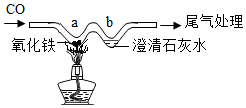

2017年北京市中考化学真题 · 选择题 第11、12、13、14、15题
11．（1分）土壤的酸碱度会影响植物的生长。下列植物在微酸性土壤中，不适宜种植的是（ ）
植物 | 花生 | 苹果 | 西瓜 | 沙枣 |
适宜的pH范围 | 5.0～6.0 | 5.0～6.5 | 6.0～7.0 | 8.0～8.7 |
A．花生B．苹果C．西瓜D．沙枣
12．（1分）硅是信息技术的关键材料。高温下氢气与四氯化硅（SiCl4）反应的化学方程式为：2H2+SiCl4Si+4HCl，该反应属于（ ）
A．化合反应B．分解反应C．置换反应D．复分解反应
13．（1分）下列关于物质用途的描述不正确的是（ ）
A．氧气可用作燃料
B．二氧化碳可用作气体肥料
C．干冰可用于人工降雨
D．铜丝可用作导线
14．（1分）如图为尿素【CO（NH2）2】中各元素质量分数的示意图，其中表示氮元素质量分数的是（ ）
A．①B．②C．③D．④
15．（1分）用“W”型玻璃管进行微型实验，如图所示。下列说法不正确的是（ ）

A．a处红棕色粉末变为黑色
B．a处的反应为CO+Fe2O3═2Fe+CO2
C．b处澄清石灰水变浑浊证明有CO2生成
D．可利用点燃的方法进行尾气处理
依据实验和溶解度曲线回答16～19题．

25℃时，向下列4只盛有100g水的烧杯中，分别加入不同质量的KCl固体，充分溶解．